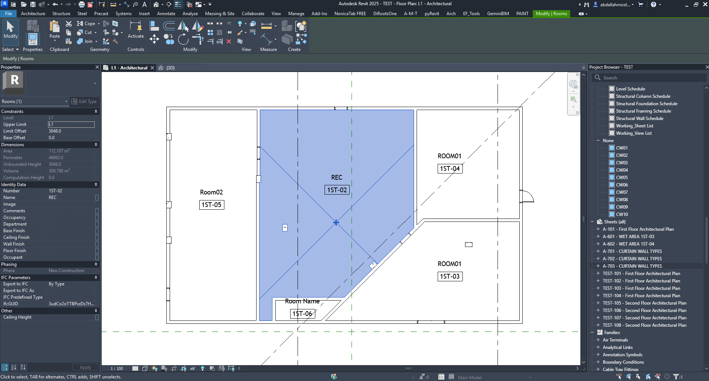
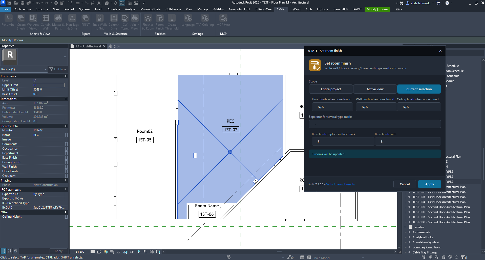
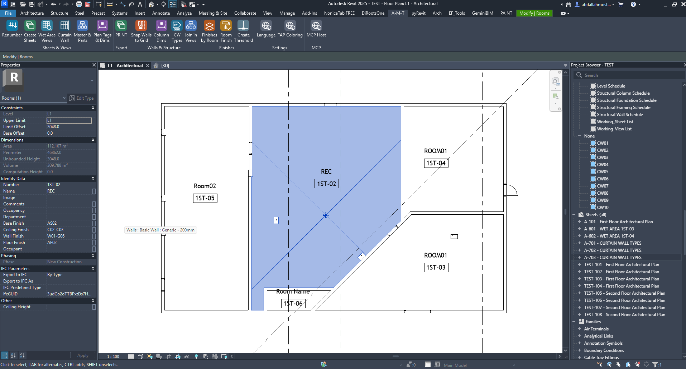

Room Finish
Write finish type marks directly into Revit room parameters.
FinishesVisual walkthroughAbout this command
Room Finish transfers finish type marks into the selected rooms. It can populate the room's Base Finish, Wall Finish, Floor Finish and Ceiling Finish parameters, helping keep room data consistent and ready for schedules and documentation.
How the command works
Command setup and results

01 · Identify the room finish parameters
Select a room to inspect its Identity Data. The room properties include Base Finish, Ceiling Finish, Wall Finish and Floor Finish. These are the fields populated by the command. The example also shows the room number and name used to identify the target room.

02 · Choose the processing scope
The Scope buttons control which rooms are processed:
- Entire project: process rooms throughout the project.
- Active view: process rooms visible in the current view.
- Current selection: process only the rooms selected in Revit.
The screenshot shows Current selection active.

03 · Configure rules and verify the result
Set the fallback values used when a finish is not found: Floor finish when none found, Wall finish when none found and Ceiling finish when none found. Use the separator field to join several type marks in one parameter. The Base finish rule replaces the configured character in the floor mark with the value entered in Base finish with. Check the update count before selecting Apply. After processing, verify the populated finish parameters in the room Properties palette.
Finish fields at a glance
- Floor finish when none found: fallback text for rooms where no floor finish mark is detected.
- Wall finish when none found: fallback text for rooms where no wall finish mark is detected.
- Ceiling finish when none found: fallback text for rooms where no ceiling finish mark is detected.
- Separator for several type marks: character inserted between multiple finish marks written to a room parameter.
- Base finish: replace in floor mark / Base finish: with: substitution rule used to derive the Base Finish value from the floor finish mark.
- Rooms will be updated: preview count of rooms affected by the current scope and settings.
In the illustrated example, the selected room is set to receive one update. After Apply, the room shows populated values such as Base Finish, Ceiling Finish, Wall Finish and Floor Finish.
Watch Room Finish in Action
Follow the complete command workflow inside Autodesk Revit.
Run the command checklist
- Confirm the rooms and finish data in the model.
- Choose Entire project, Active view or Current selection.
- Set fallback values and the multi-mark separator.
- Configure the Base Finish replacement rule if required.
- Review the rooms-to-update count, then click Apply.
- Check the room finish parameters after processing.